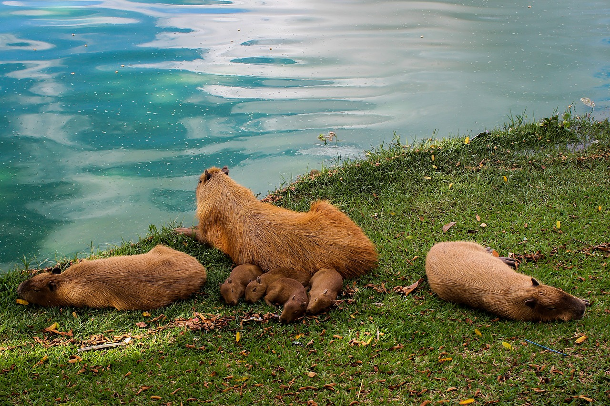

Do you want to never run out of capybara facts! Do you want to impress your friends?
sign up with your email today and we will bombard you with fun facts! Just click the button right over there!Home of the greatest capybara fun facts!
You will not find a larger collection of capybara fun facts anywhere else!!!
